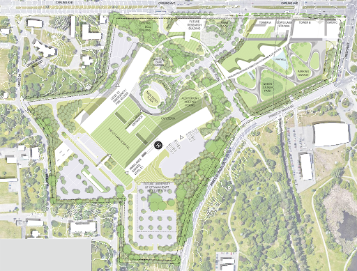
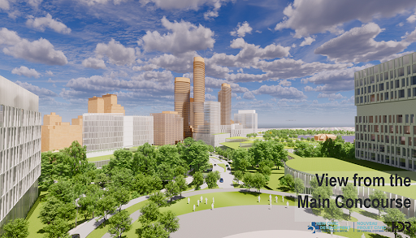
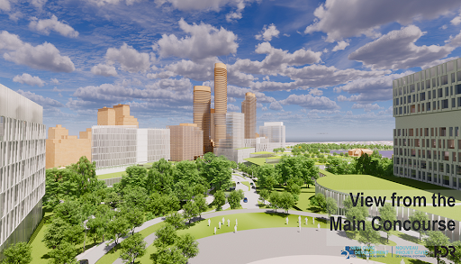

The Design of the Hospital and surrounding areas
1. Current Proposed Hospital Design
Rather than propose full-fledged design plans, we first briefly evaluate the current architectural plans for the new Ottawa General hospital. Looking from a perspective of green-space design, it can be noted that: Green spaces are implemented in the new Civic Hospital as seen in the figures below. The campus is pedestrian and cyclist safe, with enclosed walkways going through the green spaces distributed all around the campus. The roof of the parking garage also has a green space. In the figure of the bird’s eye view of the campus, it can be noted that most buildings are surrounded by green spaces outside so patients, staff and visitors inside the buildings are continuously surrounded by views of natural green spaces while also being able to exit the building into green spaces on safe walkways and completely benefitting from the existing green spaces. The public brought up multiple criticisms against new Civic hospital. Firstly, the destruction of the already existing historical green spaces from the experimental farms were felt to be unnecessary for the addition of the hospital. Secondly, the introduction of a large hospital brings significant car traffic. This problem is addressed by creating 2400 parking spaces, building an LRT station on the campus, and making the campus pedestrian and cyclist friendly. While the new Civic hospital has plans to introduce a lot of green space as evident in the pictures provided, more information on the green spaces has not been provided yet, like the type of green spaces, how much of it can be accessed, what kind of plants are grown, and how green spaces look indoors.
 

2. Suggestions for improvements to the current design based on: A) greenspace design practice guide, B) stakeholder engagement guide and toolkit
Although the planning team’s design responds well to raised issues of parking (by moving parking underground) and does include a reasonable amount of greenspace (based on the available plans), residents are against getting rid of the historic experimental farm site. One of the principles of design, when designing a greenspace, is “value what you have.” This ties in well with the Hippocratic Oath taken by doctors, “First, do no harm.” It would be greatly beneficial for the project to include and rework the existing infrastructure of the greenspace in the experimental farm site into the new proposed design. This would ease public opposition as well as potentially reduce the funding required to be allocated for the greenspace. However, this would mean that the current design needs to be revised and reworked while keeping in mind this perspective. There is extensive research already conducted on design principles with well-documented case studies that can be used and applied here [1]. This is beyond the scope of our project but would be useful for a prospective design team. Several important considerations would have to be made to enable such an inclusive design (one that includes adequate greenspace, is financially feasible and has public approval) [2]. The first and most important consideration is the stakeholders, i.e. who will be using the space and who has access to the space. Around this, a comprehensive evaluation of the site needs to be done, with the intent to preserve and integrate the existing greenspace into the plans for the new hospital. After this phase, a specialized team with the necessary relevant background should come up with a reworked design proposal. The government should then sufficiently engage and receive public feedback and begin collecting the necessary resources, starting with a reworked budget. Research done by Dr. Sarah-Anne Munoz has yielded a spectacular toolkit for engaging stakeholders in the design, and the use and maintenance of hospital greenspace [2]. Resources like these can be condensed and made available to the public and relevant planning sectors to help improve the design with the required considerations in mind.
3. Barriers and facilitators to access of greenspace in healthcare setting
Based on an extensive evaluation of the current available research done on access to greenspace in healthcare settings[3], there are several key areas that have to be evaluated in the review of the new proposed design.
In terms of awareness, key factors that act as barriers to access of greenspace are a lack of visibility of the space (from within the wards, through windows and doors), lack of knowledge that the space exists, and being unsure who can use the space. Several factors need to be kept in mind when looking at barriers from an accessibility perspective: design that enables users of all ages, abilities and needs to have access and use of the space; adequate outdoor lighting and extreme weather considerations; staff understanding of the therapeutic value of the space. Suggestions included reducing the weight of doors leading to the space, reducing distance to the space and inclusion of washrooms and emergency phones in/close to the greenspace.
Comfort, in terms of the seating and facilities for relaxation, as well as in terms of protection from natural elements also needs to be considered. Further, the studies show that a variety of both flowering and non-flowering plants needed to be included to provide a therapeutic experience.
Animal life also has to be well considered; they can provide a sensory stimulation through movement as well as therapeutic experiences through interaction with users of the space. However, allergic concerns and potential safety has to be considered carefully; experts would need to ascertain which animals can be allowed to populate the greenspace. They would also need to allocate significant resources towards maintaining the space. This careful consideration is integral to the OneHealth approach that does not just focus on human health, but also takes environmental and animal welfare into consideration.
If these elements [3] are taken well into consideration during future design, we believe that it will be possible to successfully integrate the existing greenspace of the Ottawa Experimental Farm into the new design of the Ottawa General Hospital, thus promoting the use of the greenspace, with benefits to the patients of the hospital, staff and visitors, as well as having positive environmental effects.

Citations:
- Variables to consider while implementing design from a hospital staff perspective (taken off survey) https://www.mdpi.com/2076-3298/7/8/61/pdf
- [1] Greenspace design for health and well-being (2011) https://www.forestresearch.gov.uk/documents/6951/FCPG019.pdf
- [2] Hospital grounds reimagined (2012) https://202020vision.com.au/media/41878/hospital-grounds-reimagined-greenspace-final-report-and-toolkit.pdf
- [3] Accessing green spaces within a healthcare setting (2018) https://journals-sagepub-com.proxy.library.carleton.ca/doi/full/10.1177/1937586718810859